第2章 設定と基本操作
第5節 ビットマップ画像と解像度
本項では、画像解像度の変更方法について学習します。
第3項 画像解像度の変更方法
この項で学習する内容
- 用途に合わせた画像解像度の変更方法について理解する。
解像度の確認
画像解像度の概要については、前項で理解できたかと思います。
では実際に、使用用途に合わせて適切な解像度になるよう、設定を変更してみます。
まずは、メニューバーの[ファイル]から[開く]を選択し、
素材ファイル「PS02」から2_5_3.jpgを開きましょう。
開いたら解像度の確認を行います。
画像解像度はメニューバーの[イメージ]-[画像解像度]から確認・変更できます。

すると下の写真のような[画像解像度]ダイアログボックスが表示されます。
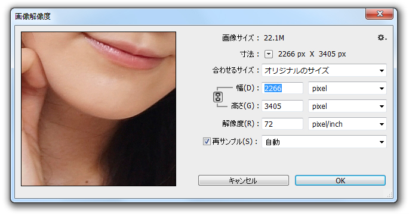
プレビュー画面が大きすぎて気になる場合は、見やすい倍率に調整することができます。
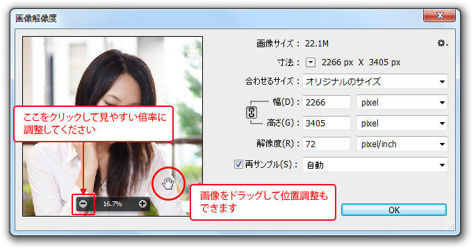
設定ウィンドウ中央部の「幅」と「高さ」は、現在の画像を構成している縦横のピクセル数を
示しています。
その下には、現在の「解像度」も表示されています。
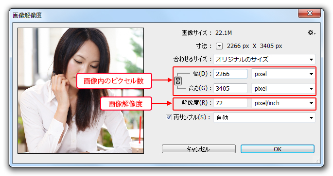
印刷時のサイズを確認してみましょう。「幅」の単位を「ｍｍ」に変更します。
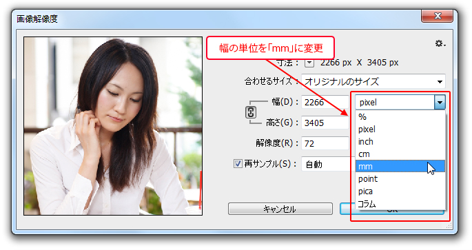
「高さ」の単位は自動的に「ｍｍ」に揃います。
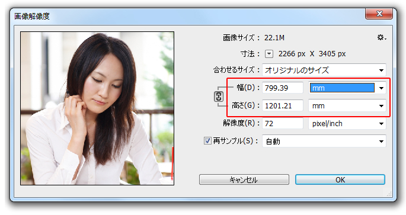
現在の設定としては、解像度はWEB用の72ppiですが、
印刷時のサイズは約800mm×1200mmと非常に大きな画像です。
今回の練習ファイルのように、一般的なデジタルカメラで撮影された画像は
解像度がWEB用で、ドキュメントサイズが非常に大きく設定されているものが多々あります。
では実際に、用途に合わせた解像度の変更方法を確認しましょう。
印刷用に解像度を変更する（ピクセル数を維持し、解像度を上げる）
印刷用画像の解像度を変更する際の留意点は、
印刷に耐える画質を維持する必要があるため、
ピクセル総数を減少させずに解像度を上げることと、
印刷時に必要なドキュメントサイズを基準に変更を行う点にあります。
[画像解像度]ダイアログボックスを閉じた方は、再度開いてください。
まず[縦横比を固定]がオンになっていること、[再サンプル]にチェックが入っていることを確認し
「幅」をA4サイズに合わせて《210mm》に変更してみます。
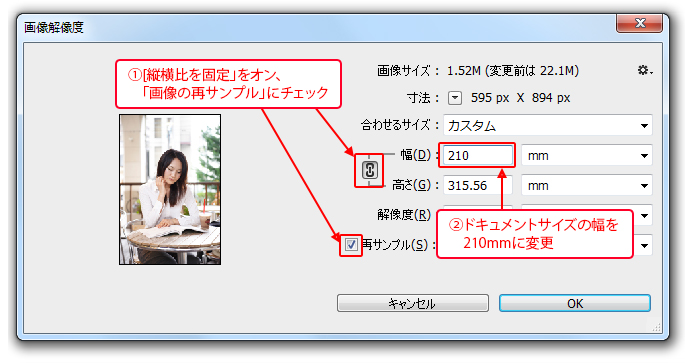
[再サンプル]にチェックが入っていると、
ピクセル数が変動するようになり、
ドキュメントサイズの減少に伴い、ピクセル数も減ることになります。
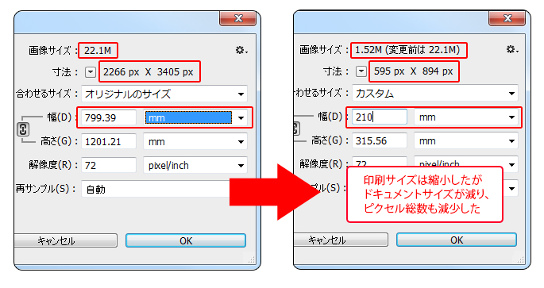
ピクセル数が減れば当然、画像は粗くなりますので、
この設定は印刷用途に適していないことが分かります。
では設定を一旦、初期状態に戻します。
キーボードの【Altキー】（Macは〔Optionキー〕）を押し続けると
[キャンセル]ボタンが[初期化]に変化しますので、その状態でクリックします。
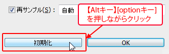
設定が初期状態に戻ったら、今度は[再サンプル]のチェックを外します。
「縦横比を固定」の表示が変化し、単位が「pixel」だった場合は「cm」になります。
（「mm」の場合はそのまま「mm」になっています）
この設定をすると、印刷サイズを変更してもピクセル数は減少しません。
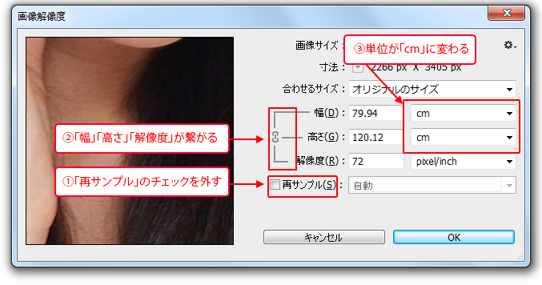
単位は「cm」のままでも構いませんが、
さきほどと同じように、幅の単位を「ｍｍ」に変更しておきましょう。
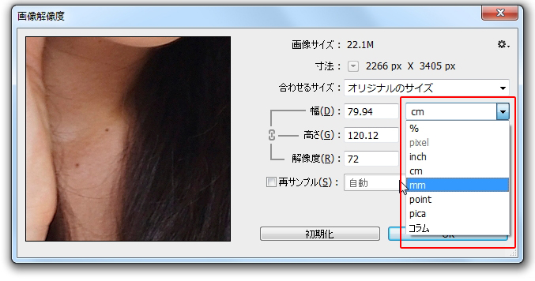
ドキュメントサイズの「幅」を《210mm》に変更します。
すると、解像度が自動的に上昇します。
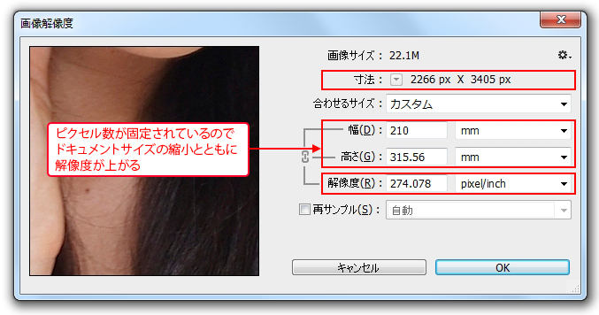
ピクセル総数が変わらずに画像のサイズが小さくなりますので、
相対的に1インチあたりのピクセル密度が増え、解像度が上がるという仕組みです。
設定が完了したら[OK]ボタンを押します。
当然、ピクセル総数が変わっていないため、画像そのものは特に見た目の変化はありません。
ワンポイント
加工する画像によって、あまり画像解像度が高くなりすぎる場合は、
[再サンプル]にチェックを入れて、調整する場合もあります。
WEB用に解像度を変更する（ピクセル数を減らし、解像度を下げる）
WEB用素材として画像解像度を変更する際に留意する点は、
モニターの標準規格である72ppiに解像度を変更することと、
実際のモニター表示時に必要な大きさに合わせて、
ピクセル数を調整してサイズを変更する点にあります。
ピクセル数を調整する必要がありますので、
[再サンプル]にチェックを入れます。単位も「pixel」に変更しておきましょう。
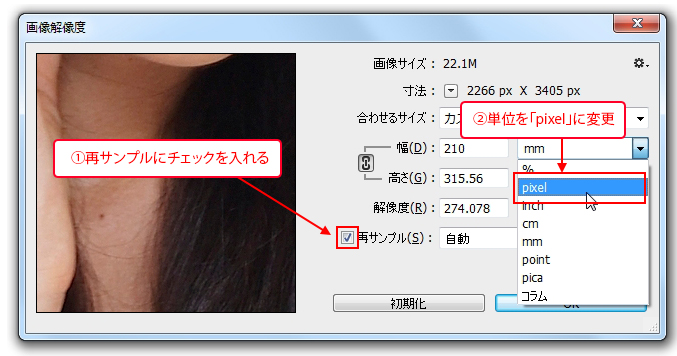
続いて、モニター解像度に合わせて、[解像度]を《72ppi》に変更し、
実際にWEBサイトなどで使用する大きさとして、
今回はピクセル数の「幅」を《300px》に変更します。
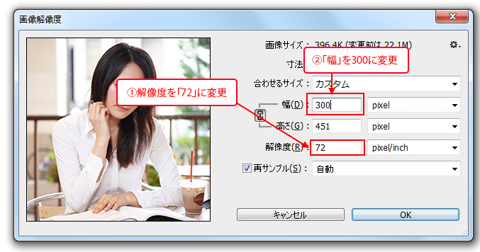
設定が変更できたら[OK]ボタンをクリックして適用します。
元画像に比べ、ピクセル数が減るために画像が粗くなります。
解像度変更時のオプション
[再サンプル]にチェックを入れた状態で、ピクセル数を増減させる際、
Photoshopはいくつかの計算方法を用いて、ピクセル数を適切に調整します。
この設定は、[画像解像度]ダイアログボックス下部にあるプルダウンメニューから選択できます。
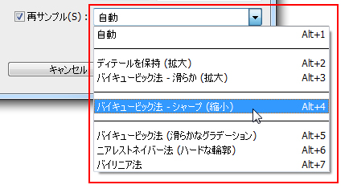
各処理方法の特徴は以下の通りになります。
| ディテールを保持 |
画像を拡大したときに発生するノイズを軽減できます。 低解像度の画像でもシャープなまま拡大できます。 ※CCからの新機能です。 |
|---|---|
| バイキュービック法 |
補完の精度は高く色調のグラデーションも滑らかに表示されます。ただし処理に時間がかかります。 |
| バイリニア法 |
標準的な画質が得られます。 バイキュービックとニアレストネイバーの中間の設定です。 |
| ニアレストネイバー法 | 高速で処理できますが、処理精度は低めです。 ファイルサイズを小さく抑える際に推奨されます。 |
解像度変更で避けるべきこと
WEB用に解像度を下げ、ピクセル数を減少させると、
減少に伴い削除されたピクセルは元に戻りません。
そのため、WEB用に低解像度にしてしまった画像を
無理に高解像度に変更しても、最初の高解像度時の画質に戻すことはできず、
単にぼやけただけの画像になってしまいます。
高解像度画像をWEB用に解像度を落とすことは問題ありませんが、
その逆の低解像度画像を高解像度に変更する操作は避けた方が良いでしょう。
この項のまとめ
- 画像解像度の確認方法
- ・メニューバーの[イメージ]-[画像解像度]から表示されるダイアログボックスで確認できる。
・ダイアログボックスでは解像度だけでなく、画像のピクセル数と印刷時のドキュメントサイズが確認できる。 - 印刷用素材向けの解像度変更
- ・ピクセル数を減少させずに解像度を上げる必要がある。
・ピクセル数を固定化するため、[再サンプル]のチェックを外す。
・印刷時に必要なドキュメントサイズに設定を変更する。
・ピクセル総数が変わらず、印刷サイズが小さくなることで、1インチ当たりのピクセル密度が増えて解像度が上がる。 - WEB用素材向けの解像度変更
- ・モニター表示に適した解像度（72ppi）とピクセル数に変更する必要がある。
・ピクセル数を調整するため、[サンプル]のチェックを入れる。
・ピクセル総数が減るため、画像は元画像より粗くなるケースが多い。
・一度、解像度を下げた画像を、印刷用解像度に上げることは避けた方が良い。
以上でこの章の学習は終了です。
ファイルは閉じて次の章へ進んでください。